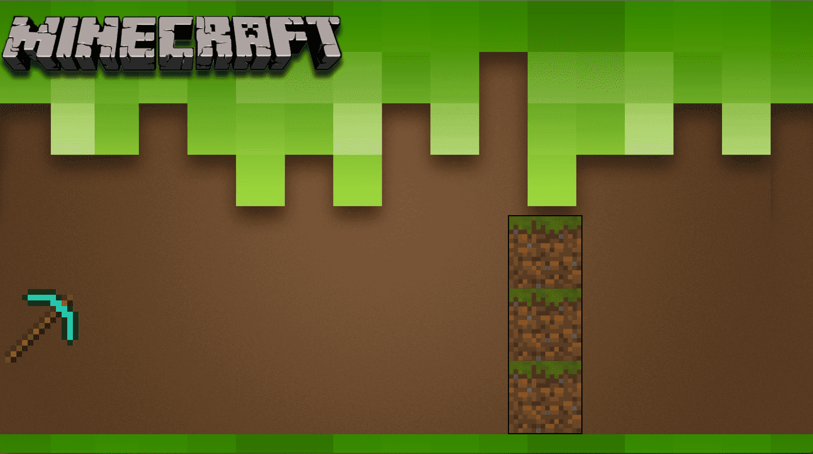

Introduksjon
I denne oppgaven skal du lære å animerer HTML-objekter ved hjelp av CSS. Under ser du hvordan resultatet vil bli til slutt:
Men før vi starter å lage animasjonen over må vi lære om hvordan animasjon fungerer ved hjelp av CSS. Så la oss starte med det grunnleggende!
For å lære mest mulig bør du åpne en tom .html-fil og skrive koden for hånd når du leser oppgaven, da kommer du til å bli en racer i CSS-animasjon!
Steg 1: Animasjons-attributtet
Animasjon i CSS er ganske enkelt, i utgangspunktet har animasjonen 2 stadier: start og slutt. Mellom start og slutt kan du legge inn forskjellige faser, som vi skal se på litt senere. Animasjonen vil heller ikke gå i loop (altså gjenta seg selv) med mindre du forteller at den skal gjøre det.
Før vi skal se på et enkelt eksempel skal vi se på animation-attributter. Vi skal bruke disse:
#id {
animation-name: et-navn;
animation-duration: 1s;
animation-timing-function: linear|ease|ease-in|ease-out|ease-in-out|step-start|step-end;
animation-delay: 1s;
animation-iteration-count: nummer|infinite;
animation-direction: normal|reverse|alternate|alternate-reverse;
animation-fill-mode: none|forwards|backwards|both;
}
name: Navnet på animasjonen.duration: Hvor lenge (i sekunder) skal animasjonen vare.timing-function: Hvordan mellom-fasene er kalkulert.delay: Hvor mye forsinkelse det skal være før animasjonen starter. Standard er 0 sekund.iteration-count: Hvor mange ganger skal animasjonen gjentas.direction: Bestemmer om animasjonen skal gå baklengs eller ikke.fill-mode: Hvilke stiler som er lagt til før og etter start av animasjonen.
Her er et enkelt eksempel på en boks som går fra venstre til høyre:
<!DOCTYPE html>
<html>
<head>
<style>
#boks {
height: 50px;
width: 50px;
background-color: blue;
position: relative;
animation-name: frem-og-tilbake;
animation-duration: 2s;
animation-iteration-count: infinite;
animation-direction: alternate;
}
@keyframes frem-og-tilbake {
0% {
left: 0px;
}
100% {
left: 100px;
}
}
</style>
</head>
<body>
<div id="boks"></div>
</body>
</html>
La oss se nærmere på koden over:
Vi har en <div> med ID boks, den er 50x50px med blå bakgrunnsfarge. Posisjonen er relative som vil si at vi har muligheter for å flytte på den.
animation-attributtene:
name: frem-og-tilbakeduration: 2s (sekunder)timing-function: Ikke oppgitt, ereasesom standard.delay: Ikke oppgitt, siden vi ønsker at animasjonen skal starte med en gang og standard er0s.iteration-count: infinite (uendelig, så den vil ikke stoppe).direction: alternate (for at den skal gå frem og tilbake)fill-mode: Ikke oppgitt, ettersom animasjonen starter med en gang og aldri slutter trenger vi ikke enfill-modefør eller etter animasjonen.
@keyframes frem-og-tilbake er det vi bruker for å spesifisere hva som skal skje under animasjonen. I dette tilfellet har vi satt navnet til animasjonen med animation-name: frem-og-tilbake, vi bruker derfor @keyframes frem-og-tilbake for å beskrive animasjonen.
Innen for @keyframes kan vi nå spesifisere hva vi vil at animasjonen skal gjøre, vi har to faser, en start og en slutt. 0% er animasjonens start og 100% er animasjonens slutt. Derfor vil boksen vår starte til venstre (left: 0px) og slutte lengre til høyre (left: 100px).
NB! Verdiene i animation-attributtene kan også skrives som en egen linje, men det er da litt vanskeligere å finne ut hva som er hva:
#boks {
animation: frem-og-tilbake 2s ...;
}
Utfordring
- Skriv koden inn i din favoritt teksteditor, lagre det som en
.html-fil og gjør oppgavene under. - Få animasjonen til å bytte farge fra blå til rød underveis.
- Klarer du å få boksen til å flytte seg nedover og oppover?
- Prøv å få boksen til å bevege seg i en firkant.
Steg 2: @keyframes
La oss nå se nærmere på @keyframes. @keyframes er CSS som forteller hvilke steg en animasjon består av.
Her kommer noen eksempler:
@keyframes diagonalt {
0% {
top: 0px;
left: 0px;
}
100% {
top: 100px;
left: 100px;
}
}
Dette eksempelet får et objekt til å gå diagonalt siden det starter på top: 0px; left: 0px; og ender på top: 100px; left: 100px;.
@keyframes ned {
0% {
top: 0px;
}
100% {
top: 100px;
}
}
Her går HTML-objektet nedover ved hjelp av top-attributtet.
@keyframes skift-farge {
0% {
background-color: blue;
}
50% {
background-color: yellow;
}
100% {
background-color: red;
}
}
Merk at i dette eksempelet har vi lagt inn 50%. Dette er et eksempel på at du kan dele inn animasjonen faser mellom 0% og 100%. Du kan legge til så mange faser du vil ved å bruke %.
Merk at du ikke kan endre animasjonens varighet med @keyframes og %, du må da heller endre på animation-duration.
Steg 3: Pakke ut filene
Nå skal vi animere øksen og Minecraft-logoen:
- Last ned og pakk ut minecraft_animasjon.zip.
- Åpne
index.htmli din favoritt teksteditor og i en nettleser.
Du vil nå ha en nettside som ser noe sånt ut:

I koden til index.html har vi et bakgrunnsbilde og 3 div-er med følgende ID: pickaxe, minecraft og block. Alle disse ID-ene er et bilde på nettsiden, bakgrunnsbildet ligger i CSS-en under body.
Dette skal vi programmere:
pickaxe-en skal komme flyvende inn og treffe blokkene.- Når øksen har truffet blokkene skal logoen skal komme inn.
Steg 4: Flyvende øks
Nå skal vi få pickaxe-en til å fly. Vi begynner med å beskrive animasjonen med keyframes.
Sjekkliste
- Lag en
@keyframesmed animasjonsnavnetmove-pickaxe. - La figuren starte utenfor skjermen. Hint: bruk en negativ verdi av
left. - La
pickaxe-bildet bevege seg bort til blokkene. Klarer du å finne ut hvor langt det er? Hint: positiv verdi avleft. - Legg til rotasjon med
transform: rotate(antall grader). - Kan du tenke deg hvor
transform: rotate()bør være? I0%eller100%? - Prøv deg frem med hvor mange grader du trenger for at den skal bli riktig. Hint: 360 grader er én gang og 720 grader er to ganger rundt seg selv.
Så legger vi animasjonen til øksen.
Sjekkliste
- Finn
#pickaxei CSS-en. - Legg til animasjonsnavnet fra
keyframesmedanimation-name. - Legg til
animation-durationpå2s. - Legg til et
animation-delaypå1s. - Sett
animation-timing-functiontillinear. - Sett
animation-fill-modetilforwards.
#pickaxe {
background-image: url("pickaxe.png");
z-index: 1;
width: 150px;
height: 150px;
position: absolute;
bottom: 150px;
left: -150px;
animation: move-pickaxe 2s;
animation-delay: 1s;
animation-timing-function: linear;
animation-fill-mode: forwards;
}
@keyframes move-pickaxe {
0% {
left:-150px;
}
100% {
left: 800px;
transform: rotate(720deg);
}
}
Steg 5: Flyvende logo
Nå som du har klart å få pickaxe til å fly inn med rotasjon er oppgaven din nå å få #minecraft til komme flyvende inn etter at pickaxe har stoppet.
- Bruk det du har lært i oppgaven til å og prøv få logoen til å komme inn når
pickaxeer ferdig med sin animasjon.
#minecraft {
background-image: url("minecraft.png");
z-index: 1;
width: 616px;
height: 154px;
position: absolute;
left: -900px;
animation: move_minecraft 4s;
animation-delay: 3s;
animation-fill-mode: forwards;
}
@keyframes move_minecraft {
0% {
left: -900px;
}
100% {
left:400px;
}
}
Gratulerer! Du har nå laget din første animasjon!